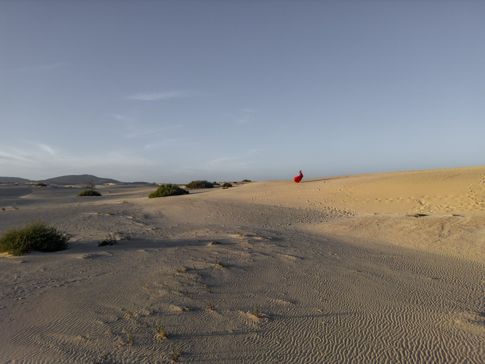
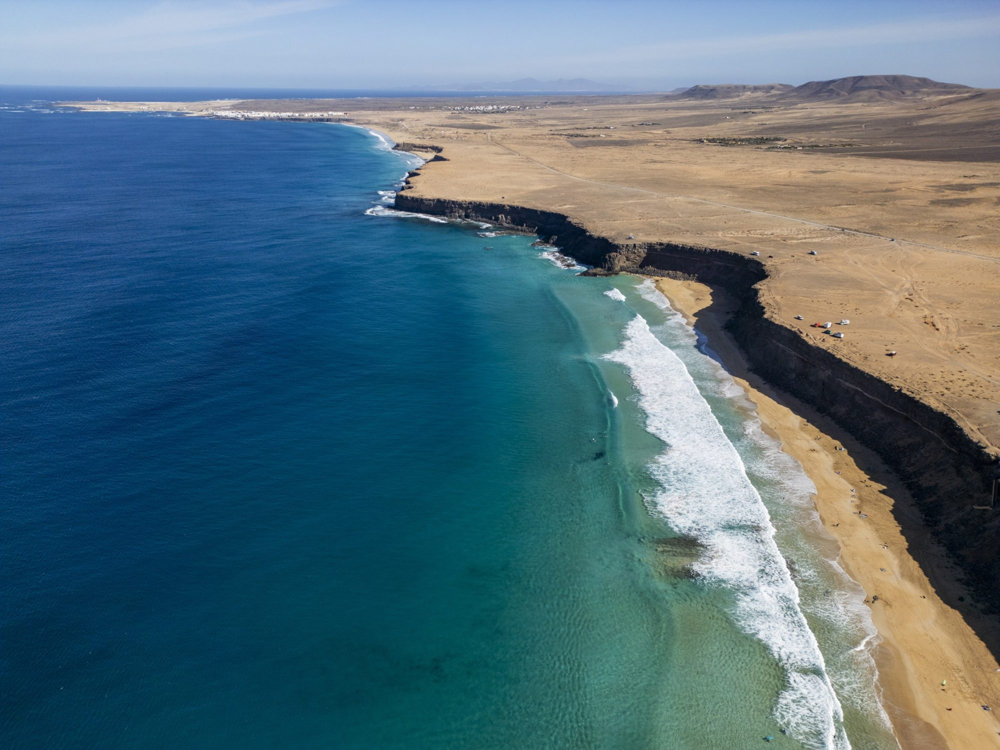
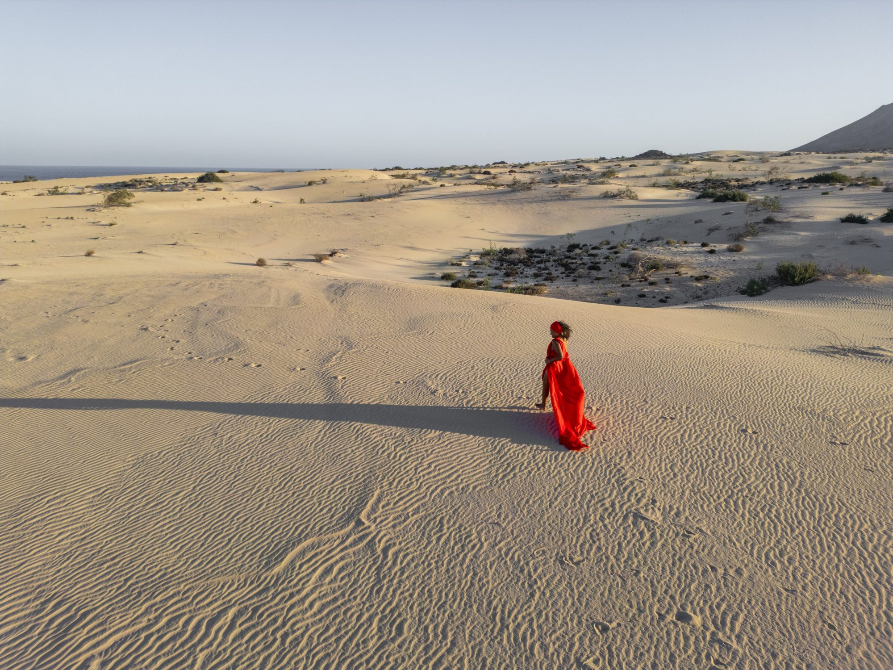
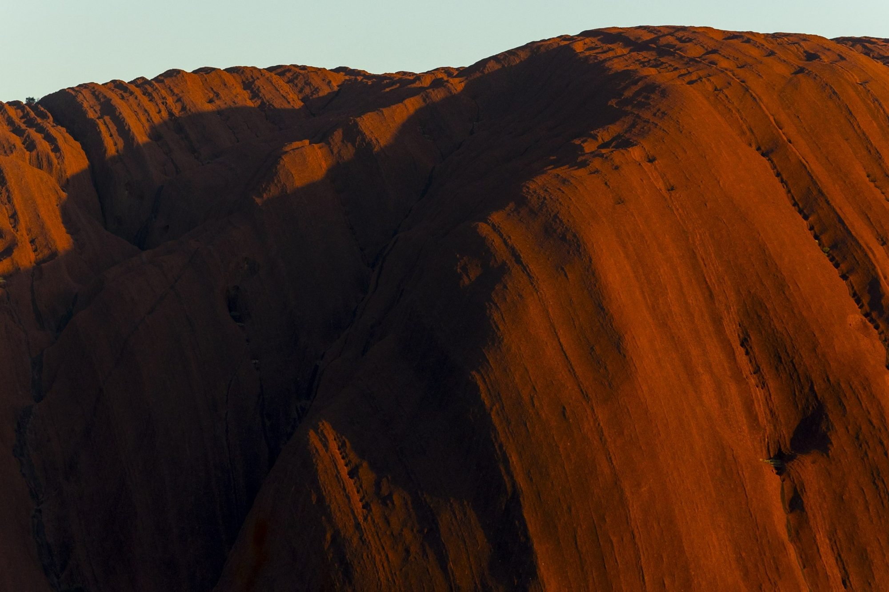
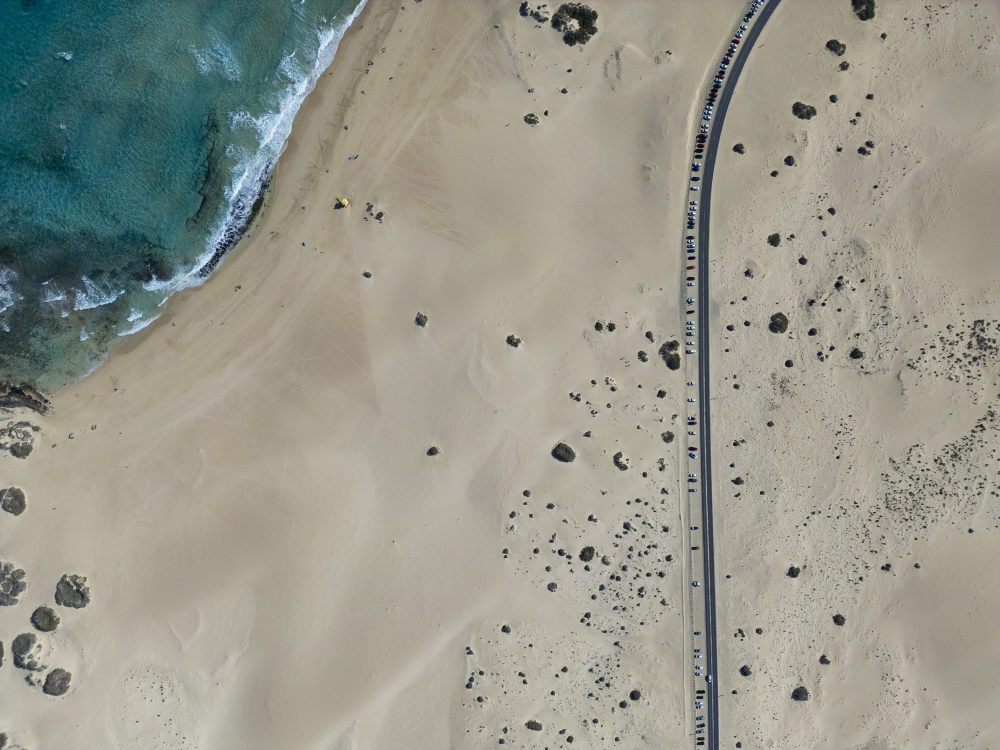

EXPERIENCE ABU DHABI × JUAN AIZPURU
More reasons
to experience
Abu Dhabi.
Original photography and film that bring the emirate’s places, people and experiences to the world.
DISCOVER THE PROPOSAL ↘JUAN AIZPURU · PREVIOUS PORTFOLIO IMAGE · ILLUSTRATIVE
A PROPOSAL FOR EXPERIENCE ABU DHABI
Make the destination
feel closer.
From the desert to the coast, from cultural landmarks to the people who bring the city to life.
I propose travelling to Abu Dhabi to create original photography and film with local guides, talent and production partners. Together, we can tell stories that help your audiences imagine the experience for themselves.
Your team can use the material to create its own campaigns, or we can develop a complete campaign together around the markets and priorities you choose.
EXPLORE THE COLLABORATION ↗
PEOPLE · PLACE · EXPERIENCE
The stories behind
the destination.
WHAT WE CAN CREATE
A visual partner for
your next campaign.
Built around the experiences and audiences your team wants to reach.
01Destination photography & film+
Original images of coast, desert, city, heritage and hospitality, produced in Abu Dhabi for the places and experiences you want to promote.
02Stories shaped with local people+
Work alongside local guides, hosts, artisans and creative partners to share the people and perspectives behind the destination, with participation and permissions agreed together.
03A collection for your marketing team+
Photography and film that your team can adapt for destination campaigns, digital channels and travel trade presentations. Formats, scope and usage are agreed to fit your needs.
04A complete campaign+
From creative concept to production and final material, our team can create a campaign with your local partners, tailored to your chosen audience and brief.
SELECTED WORK
A visual approach,
open to the world.
These are Juan Aizpuru’s photographs from previous work outside Abu Dhabi. They illustrate his approach; the proposed images would be created in the emirate.



HOW WE WORK
Your priorities.
Created together.
We begin with the people you want to reach and the experiences you want to promote. Together, we develop the brief and identify the right locations, collaborators and production approach.
A project can be a focused assignment or an extended production. Your team and local partners help shape the access and context needed to tell the story well.
The scope, deliverables, production responsibilities and image rights are agreed before the project begins.
ABOUT JUAN AIZPURU
A personal eye.
A professional team.
I’m Juan Aizpuru, a photographer and filmmaker working across travel, people and the outdoors. I collaborate with local teams and can bring a production crew when the project calls for it.
I create images designed to help destinations share what makes their experiences distinctive.
EXPLORE MY WORK ↗Created on location.
Made for your audience.
FITUR 2027 · MADRID
Let's tell the next
Abu Dhabi story.
I would love to hear your team’s priorities and explore how we could create something together.
VIEW MY PORTFOLIO ↗Experience Abu Dhabi · Stand 8C05, Pavilion 8